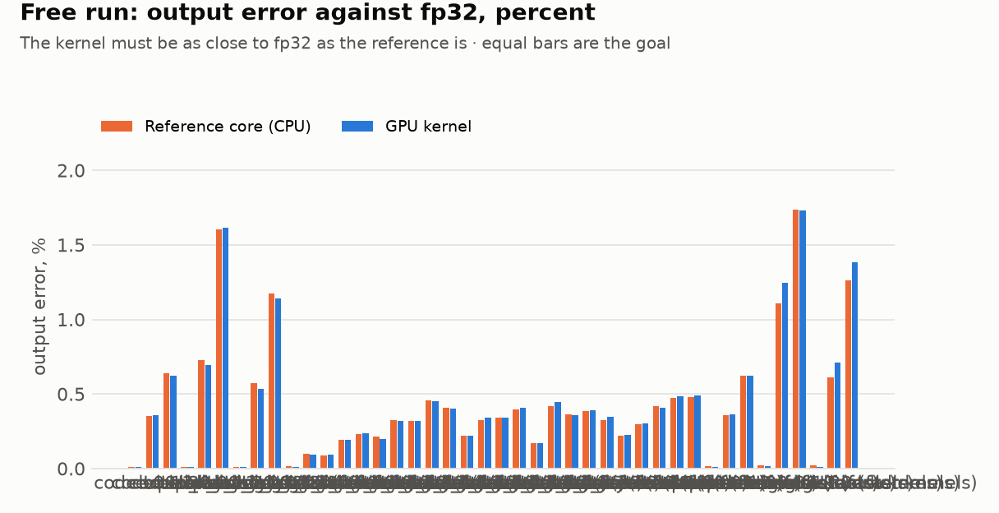

GPU kernel against the reference core
The same recorded traces go through the GPU kernel and through the C++ reference. Three things are compared; kernel/verify_kernel.py explains why.

| Trace | Result | In a window: median | 99% below | worst | Folds | Bit-identical folds | int8 entries that differ | Free run: kernel | reference | Drift between the two free runs |
|---|---|---|---|---|---|---|---|---|---|---|
| code_trace_layer_00 | PASS | 1.1e-08 | 5.8e-07 | 2.0e-04 | 255 | 255 | 0 of 133,693,440 | 0.0097% | 0.0094% | 1.3e-03 |
| code_trace_layer_13 | PASS | 1.1e-07 | 3.0e-06 | 1.3e-04 | 255 | 255 | 0 of 133,693,440 | 0.3578% | 0.3537% | 5.2e-02 |
| code_trace_layer_30 | PASS | 6.8e-08 | 5.6e-06 | 1.3e-04 | 255 | 255 | 0 of 133,693,440 | 0.6218% | 0.6377% | 6.2e-02 |
| explain_trace_layer_00 | PASS | 6.2e-09 | 7.0e-07 | 3.4e-05 | 255 | 255 | 0 of 133,693,440 | 0.0125% | 0.0124% | 7.8e-04 |
| explain_trace_layer_13 | PASS | 1.2e-07 | 2.4e-06 | 1.4e-04 | 255 | 255 | 0 of 133,693,440 | 0.6942% | 0.7268% | 1.5e-01 |
| explain_trace_layer_30 | PASS | 4.7e-08 | 5.0e-06 | 1.7e-04 | 255 | 255 | 0 of 133,693,440 | 1.6151% | 1.6050% | 1.6e-01 |
| reasoning_trace_layer_00 | FAIL | 4.6e-09 | 6.2e-07 | 2.1e-03 | 255 | 255 | 0 of 133,693,440 | 0.0125% | 0.0127% | 2.1e-03 |
| reasoning_trace_layer_13 | PASS | 1.2e-07 | 2.9e-06 | 2.6e-04 | 255 | 255 | 0 of 133,693,440 | 0.5350% | 0.5728% | 7.4e-02 |
| reasoning_trace_layer_30 | PASS | 5.2e-08 | 6.3e-06 | 1.7e-04 | 255 | 255 | 0 of 133,693,440 | 1.1387% | 1.1734% | 1.4e-01 |
| all_layers_trace_layer_00 (fast kernels) | PASS | 7.9e-08 | 5.0e-07 | 2.9e-04 | 127 | 0 | 27,395,633 of 66,584,576 | 0.0077% | 0.0134% | 4.2e-02 |
| all_layers_trace_layer_01 (fast kernels) | PASS | 1.3e-07 | 2.5e-06 | 2.5e-04 | 127 | 0 | 38,931,160 of 66,584,576 | 0.0958% | 0.0962% | 9.6e-02 |
| all_layers_trace_layer_02 (fast kernels) | PASS | 1.3e-07 | 3.4e-06 | 1.6e-03 | 127 | 0 | 34,643,054 of 66,584,576 | 0.0922% | 0.0878% | 4.1e-02 |
| all_layers_trace_layer_04 (fast kernels) | PASS | 1.3e-07 | 2.9e-06 | 2.7e-04 | 127 | 0 | 38,323,541 of 66,584,576 | 0.1950% | 0.1915% | 1.4e-01 |
| all_layers_trace_layer_05 (fast kernels) | PASS | 1.5e-07 | 5.2e-06 | 1.1e-04 | 127 | 0 | 42,329,720 of 66,584,576 | 0.2360% | 0.2336% | 2.2e-01 |
| all_layers_trace_layer_06 (fast kernels) | PASS | 1.5e-07 | 9.9e-06 | 2.4e-04 | 127 | 0 | 44,506,951 of 66,584,576 | 0.1988% | 0.2132% | 5.3e-02 |
| all_layers_trace_layer_08 (fast kernels) | PASS | 1.4e-07 | 4.9e-06 | 1.1e-04 | 127 | 0 | 38,501,442 of 66,584,576 | 0.3200% | 0.3260% | 8.4e-02 |
| all_layers_trace_layer_09 (fast kernels) | PASS | 1.6e-07 | 5.7e-06 | 1.6e-04 | 127 | 0 | 36,266,180 of 66,584,576 | 0.3184% | 0.3193% | 1.3e-01 |
| all_layers_trace_layer_10 (fast kernels) | PASS | 1.5e-07 | 3.4e-06 | 9.2e-05 | 127 | 0 | 39,212,209 of 66,584,576 | 0.4487% | 0.4555% | 1.7e-01 |
| all_layers_trace_layer_12 (fast kernels) | PASS | 1.4e-07 | 4.4e-06 | 1.3e-04 | 127 | 0 | 34,633,236 of 66,584,576 | 0.4043% | 0.4065% | 9.7e-02 |
| all_layers_trace_layer_13 (fast kernels) | PASS | 1.6e-07 | 5.8e-06 | 1.4e-04 | 127 | 0 | 45,324,288 of 66,584,576 | 0.2216% | 0.2198% | 5.0e-02 |
| all_layers_trace_layer_14 (fast kernels) | PASS | 1.4e-07 | 5.6e-06 | 2.7e-04 | 127 | 0 | 44,556,289 of 66,584,576 | 0.3399% | 0.3273% | 8.6e-02 |
| all_layers_trace_layer_16 (fast kernels) | PASS | 1.4e-07 | 4.7e-06 | 1.5e-04 | 127 | 0 | 37,589,049 of 66,584,576 | 0.3403% | 0.3406% | 7.1e-02 |
| all_layers_trace_layer_17 (fast kernels) | PASS | 1.6e-07 | 7.5e-06 | 3.4e-04 | 127 | 0 | 45,164,388 of 66,584,576 | 0.4069% | 0.3961% | 6.7e-02 |
| all_layers_trace_layer_18 (fast kernels) | PASS | 1.3e-07 | 4.8e-06 | 9.2e-05 | 127 | 0 | 42,977,677 of 66,584,576 | 0.1724% | 0.1719% | 5.4e-02 |
| all_layers_trace_layer_20 (fast kernels) | PASS | 1.4e-07 | 5.5e-06 | 1.4e-04 | 127 | 0 | 39,164,878 of 66,584,576 | 0.4444% | 0.4176% | 7.9e-02 |
| all_layers_trace_layer_21 (fast kernels) | PASS | 1.4e-07 | 7.9e-06 | 2.8e-04 | 127 | 0 | 40,040,593 of 66,584,576 | 0.3551% | 0.3629% | 8.1e-02 |
| all_layers_trace_layer_22 (fast kernels) | PASS | 1.5e-07 | 8.5e-06 | 1.2e-04 | 127 | 0 | 48,508,138 of 66,584,576 | 0.3909% | 0.3853% | 7.4e-02 |
| all_layers_trace_layer_24 (fast kernels) | PASS | 1.5e-07 | 1.0e-05 | 1.9e-04 | 127 | 0 | 36,197,466 of 66,584,576 | 0.3456% | 0.3263% | 3.4e-02 |
| all_layers_trace_layer_25 (fast kernels) | PASS | 2.2e-07 | 1.7e-05 | 4.3e-04 | 127 | 0 | 42,584,799 of 66,584,576 | 0.2233% | 0.2201% | 8.6e-02 |
| all_layers_trace_layer_26 (fast kernels) | PASS | 1.6e-07 | 1.4e-05 | 3.5e-04 | 127 | 0 | 43,433,667 of 66,584,576 | 0.3010% | 0.2992% | 1.8e-01 |
| all_layers_trace_layer_28 (fast kernels) | PASS | 1.6e-07 | 1.2e-05 | 1.3e-04 | 127 | 0 | 42,451,854 of 66,584,576 | 0.4058% | 0.4187% | 1.3e-01 |
| all_layers_trace_layer_29 (fast kernels) | PASS | 1.5e-07 | 1.1e-05 | 2.3e-04 | 127 | 0 | 42,958,922 of 66,584,576 | 0.4869% | 0.4748% | 6.0e-02 |
| all_layers_trace_layer_30 (fast kernels) | PASS | 1.4e-07 | 1.0e-05 | 1.4e-04 | 127 | 0 | 39,680,091 of 66,584,576 | 0.4916% | 0.4793% | 4.7e-02 |
| code_trace_layer_00 (fast kernels) | PASS | 8.3e-08 | 5.9e-07 | 2.9e-04 | 255 | 0 | 55,784,116 of 133,693,440 | 0.0097% | 0.0168% | 2.2e-02 |
| code_trace_layer_13 (fast kernels) | PASS | 1.6e-07 | 5.7e-06 | 3.3e-04 | 255 | 0 | 92,661,507 of 133,693,440 | 0.3629% | 0.3572% | 7.0e-02 |
| code_trace_layer_30 (fast kernels) | PASS | 1.4e-07 | 8.6e-06 | 3.4e-04 | 255 | 0 | 80,283,383 of 133,693,440 | 0.6214% | 0.6236% | 5.6e-02 |
| explain_trace_layer_00 (fast kernels) | PASS | 8.1e-08 | 7.1e-07 | 7.4e-05 | 255 | 0 | 59,332,250 of 133,693,440 | 0.0136% | 0.0229% | 9.6e-03 |
| explain_trace_layer_13 (fast kernels) | PASS | 1.6e-07 | 4.2e-06 | 3.9e-04 | 255 | 0 | 71,764,309 of 133,693,440 | 1.2434% | 1.1078% | 2.0e-01 |
| explain_trace_layer_30 (fast kernels) | PASS | 1.4e-07 | 8.0e-06 | 3.6e-04 | 255 | 0 | 66,278,844 of 133,693,440 | 1.7331% | 1.7375% | 1.2e-01 |
| reasoning_trace_layer_00 (fast kernels) | PASS | 8.0e-08 | 7.8e-07 | 2.5e-04 | 255 | 0 | 63,688,777 of 133,693,440 | 0.0130% | 0.0224% | 5.2e-03 |
| reasoning_trace_layer_13 (fast kernels) | PASS | 1.6e-07 | 5.1e-06 | 5.6e-04 | 255 | 0 | 79,581,523 of 133,693,440 | 0.7082% | 0.6120% | 3.1e-01 |
| reasoning_trace_layer_30 (fast kernels) | PASS | 1.4e-07 | 1.0e-05 | 2.2e-04 | 255 | 0 | 68,405,747 of 133,693,440 | 1.3842% | 1.2616% | 2.1e-01 |
What it shows
- 41 of 42 traces pass.
- The drift column is why a plain output comparison cannot be the test: two correct runs end this far apart.
Source: d_verify_*.txt.
Generated 2026-11-13 23:28 from results/run-quick-einstein-v8-radix, results/fast_checks_v2, results/accuracy-v7, results/s20_ablations, results/gpu-suite by reports/generate_reports.py. All reports.